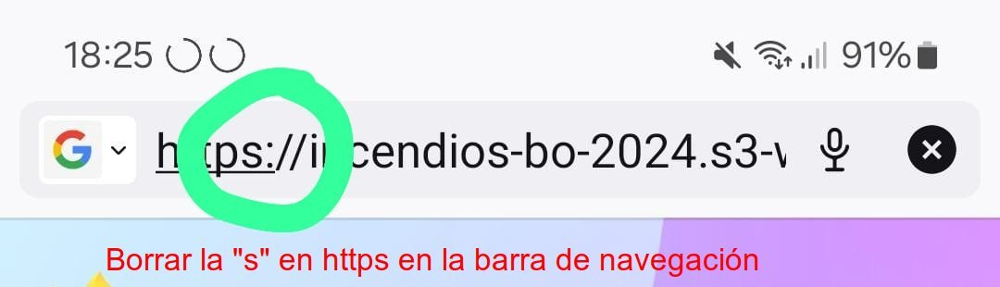

Página web con información relativa a los incendios en Bolivia. En particular, la posición de los actores políticos respecto a la abrogación de las leyes incendiarias.
Llamamos Leyes Incendiarias a las leyes que de forma directa o indirecta promueven los incendios. Esto puede ser permitiendo el desmonte y la quema de terrenos o asignando penalidades derrisorias (ejemplo: cierta ley multa con 20 centavos de dólar cada hectárea quemada).
Se incidirá en los objetivos mencionados arriba a través de la página web y medios afines (campaña en RRSS, contenidos audiovisuales, etc). En particular:
Estas medidas tienen el potencial de incidir tanto en la opinión pública como en la postura política de los actores políticos.
Un prototipo de la página web descrita aquí puede encontrarse en http://incendios-bo-2024.s3-website.us-east-2.amazonaws.com/.
Este prototipo es una referencia que cumple con las funciones básicas buscadas. Esta sujeto a mejoramiento tanto en diseño como en funciones, etc.
Nota: La página web debe accederse por HTTP. Algunos navegadores móbiles cambian la dirección a HTTPS. De ser así, cambiar la dirección https->http o de lo contrario no se podrá acceder a la página (servidor actual solo HTTP).
El proyecto se desarrolla de forma voluntaria. Dada la urgencia de los eventos, se busca tener lista la página web en un tiempo corto. Por ello, se buscan colaboradores comprometidos que puedan dar resultados en tiempos cortos para las secciones de UI y UX.
Se requiere apoyo en las siguientes áreas.
Diseño gráfico priorizand el acceso por dispositivos móbiles (mobile first design)
Diseño de los componentes y funciones de la página, buscando la mejor forma de presentar la información y los elementos de forma que su accesso sea sencillo e intuitivo.
Campaña de difusión a través de RRSS (Facebook, Instagram, TikTok). Decidir la forma y los medios de presentar esta información al público de forma que su difusión sea más extensa y accesible.
Generar contenido gráfico relativo al tema de los incendios.
Análisis, manejo y proceso de información pertinente para añadirla a la página. Esto incluye distintas fuentes.